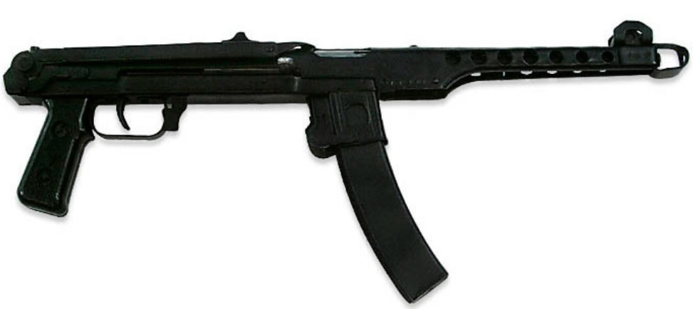

ММГ Пистолет-пулемёт Судаева
Массо-габаритный макет ПП Судаева (ММГ ППС) обр. 1942г. Отличный подарок для человека любящего историю. Макет относится к периоду Великой Отечественной Войны. В макете деактивирована боевая части оружия, производство выстрела невозможно. Макет продается свободно, без каких либо ограничений.
7,62-мм пистолеты-пулемёты образцов 1942 и 1943 годов системы Судаева (ППС) — варианты пистолета-пулемёта, разработанного советским конструктором Алексеем Судаевым в 1942 году. Применялись советскими войсками во время Великой Отечественной войны.
Нередко ППС рассматривается в качестве лучшего пистолета-пулемёта Второй мировой войны.

В результате, в 1942 году был объявлен конкурс на более легкий, компактный и дешевый в производстве пистолет-пулемет, но не уступающий по характеристикам пистолету-пулемету конструкции Шпагина. В конкурсе участвовали такие знаменитые конструкторы как В. А. Дегтярев, Г. С. Шпагин, Н. В. Рукавишников, С. А. Коровин. Победу одержало оружие Александра Ивановича Судаева. Пистолет-пулемёт ППС спроектирован на основе компиляции проекта А. И. Судаева и проекта техника-лейтенанта И. К. Безручко-Высоцкого (конструкция затвора и возвратной системы). В то время как в осаждённый город по дороге жизни шло продовольствие для ленинградцев, обратно из города вывозили не только беженцев, но и новое оружие.
Первые пистолеты-пулемёты прошли полевые испытания 6-13 июня 1942 года в частях Ленинградского фронта, после чего было начато их серийное производство на Сестрорецком оружейном заводе. В конце 1942 года пистолет-пулемёт был принят на вооружение под наименованием ППС-42. В следующем, 1943 году на вооружение была принята улучшенная конструкция под названием ППС-43 (укорочен ствол и приклад, изменены рукоятка взведения, флажок предохранителя и защелка плечевого упора, кожух ствола и ствольная коробка объединены в одну деталь).
Всего до прорыва блокады в январе 1944 г. было выпущено 46 572 шт. ППС обеих модификаций. Пистолет-пулемёт Судаева обр. 1943 г. производился в СССР с 1943 по 1945 г. В общей сложности было выпущено порядка 500 тыс. единиц ППС обеих модификаций.
После окончания войны, в начале 1950-х годов ППС был снят с вооружения Советской Армии и постепенно заменён автоматом Калашникова (хотя следует отметить, что последнее советское наставление по ППС было выпущено в 1955 году), несколько дольше он сохранялся на вооружении тыловых и вспомогательных подразделений, частей внутренних войск и железнодорожных войск. На вооружении отдельных подразделений военизированной охраны ППС состоял по меньшей мере, до конца 1980-х годов.